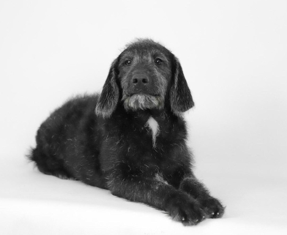
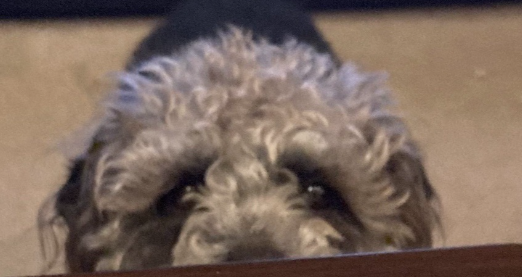
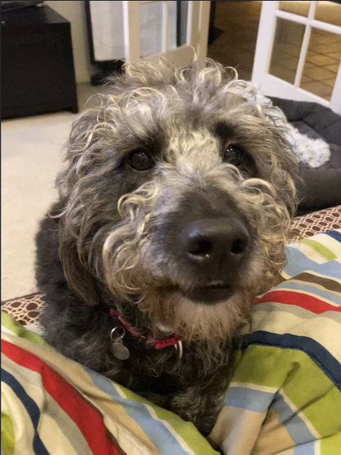

My name is Anika.
I go to school in the Pacific NorthWest. I also have a dog named Toby. My dog is a labradoodle.
  The first photo is when my dog was a puppy. The second picture is how my dog looks like now at 3 years old. The third photo is when Toby was smiling to try to eat what I was eating. Toby is very lazy in the morning. He has a routine of going from one bed to a dog bed and to another dog bed and settles on sleeping on the floor. When my dog is lying down and someone walks past him, he will asks for belly rubs. Toby is very energetic in the evenings though. He is ready to jump in the car for a walk and does lots of zoomies.
If you ever see me I will probably be weearing pink because it is my favorite color. You can know more in the "Interests" page of this website.
I can play piano. I learn Hindustani Classical piano and I am learning how to play tabla.
I really like to draw. I have a big box and another smaller box filled with acyrilic paints and little things for decoration like rinestones. I like to paint in acrylics. I don't usually use watercolor because I don't have watercolor paper at home, but I do have a watercolor pallete that's round and has white watercolor somehow and smells suspicouscly like air-dry clay.